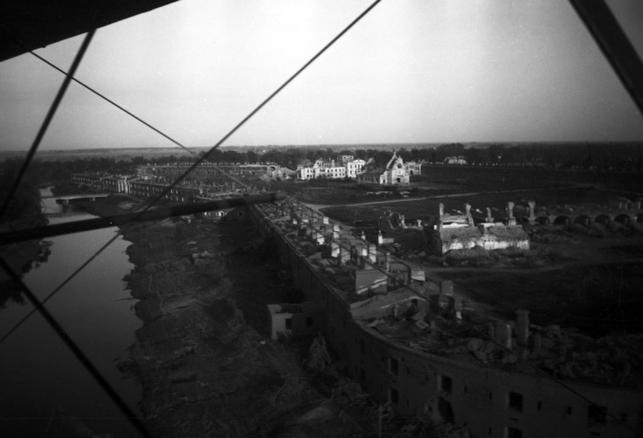
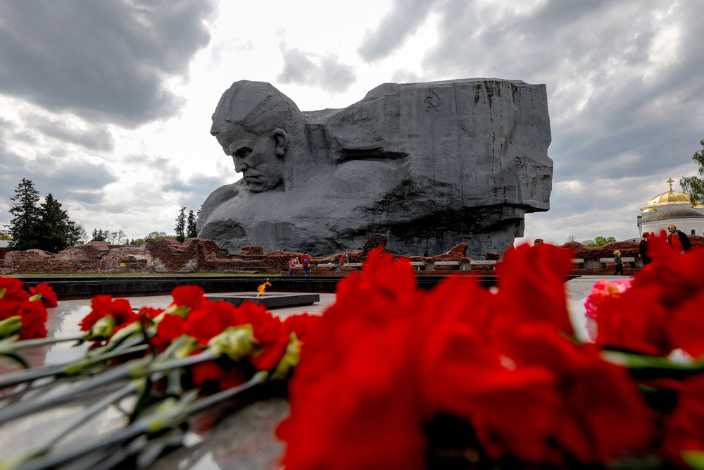

Брэст — горад герой!
З усіх гарадоў Савецкага Саюза менавіта Брэсту выпала лёс прыняць першы бой з нямецкімі захопнікамі.

Напад на крэпасць было раптоўным, таму гарнізон было знянацку. Агнём з паветра фашысты знішчылі вадаправод і склады,
перапынілі сувязь. Гарнізон крэпасці панёс значныя страты. Нямецкае камандаванне разлічвала захапіць крэпасць на працягу
некалькіх гадзін, але 45-я дывізія вермахта засела ў Брэсце на тыдзень і са значнымі стратамі яшчэ цэлы месяц душыла
асобныя ачагі супраціву герояў - абаронцаў Брэста. Брэсцкая крэпасць стала сімвалам мужнасці, гераічнай стойкасці і
доблесці савецкіх воінаў.
7—8 АТАК
штодня даводзілася адбіваць абаронцам крэпасці
6—7 ТЫС.
чалавек трапілі ў нямецкі палон

8 мая 1965 года крэпасць атрымала званне «Крэпасць-герой». У 1971 году крэпасць-герой "Брэст" стала мемарыяльным
комплексам. Акрамя часткі казармаў цытадэлі, пакінутых у памяць нашчадкам у руінах, сюды ўваходзіць Музей абароны
Брэсцкай крэпасці, а таксама руіны Белага палаца. Цэнтральным аб'ектам мемарыяла з'яўляецца манумент «Мужнасць», на
адваротным баку якога размешчаны рэльефныя кампазіцыі, якія прадстаўляюць асобныя эпізоды барацьбы абаронцаў крэпасці.